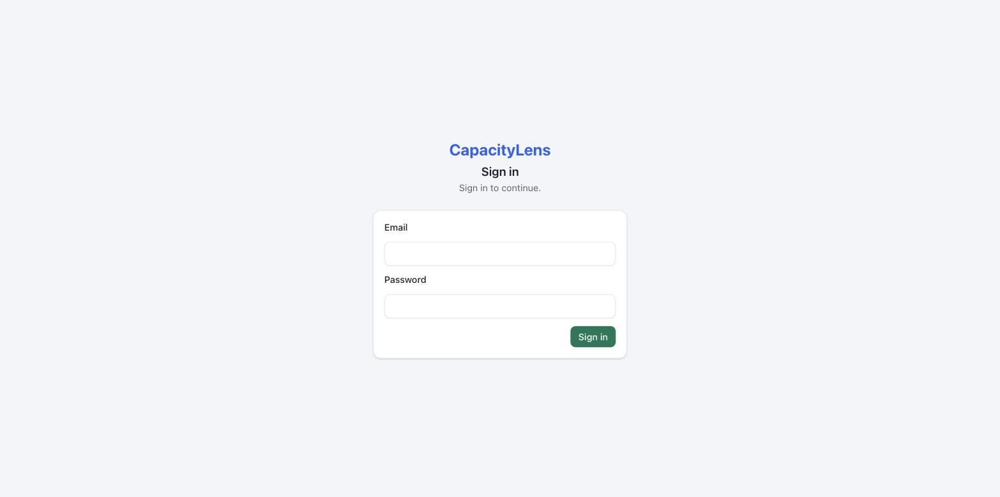
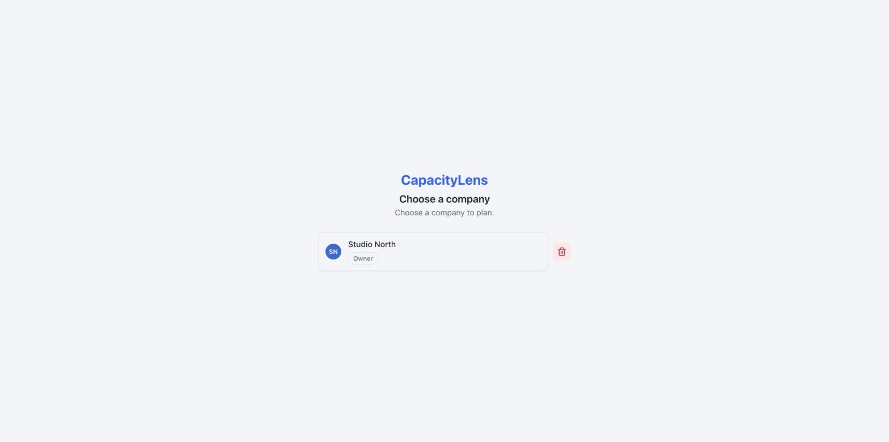
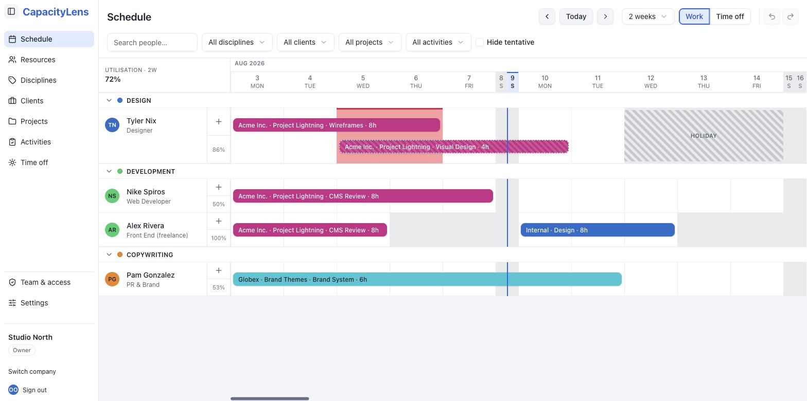

Install CapacityLens
This is the quick path: four lines of configuration and three screens to a working install with real sign-in, real persistence, and one Owner. It takes about five minutes on a machine that already has Docker or Node installed. For TLS, backups and the full production treatment, see Self-hosting once you're past this page.
TIP
Just want to look around first? Try the demo instead — no configuration, no install.
Prerequisites
- Docker, or Node.js with pnpm — either way to run the app, covered in Install with Docker.
- A way to generate two random strings for the
.envfile. Runopenssl rand -base64 48for each one, or if you don't haveopenssl, use a password manager's password generator set to 32 characters or more.
Steps
Fill in the
.envfile (~2 minutes). Copy.env.exampleto.envand set four values:bashSMALLSASS_ACCOUNT_MODE=password SMALLSASS_ACCOUNT_SECRET=<random 32+ chars> # session signing SMALLSASS_ACCOUNT_PUBLIC_URL=https://plan.example.com SMALLSASS_ACCOUNT_SETUP_TOKEN=<random 32+ chars> # claims the Owner seat, used onceAll the data lives in one SQLite file next to the app — there's no separate database to install. See Install with Docker for the full walkthrough of these settings.
Start the server. With Docker:
bashdocker compose up --build -dSee Install with Docker for the full walkthrough, including what each service does. Running Node and pnpm directly instead? See Install without Docker. Once it's running, visit your URL.
Claim the Owner account (~30 seconds). With an empty database, the sign-in wall becomes a "create the owner account" form: name, email, password, and the setup token from your
.env. The moment it succeeds, self-registration closes — nobody else can join your instance without an invite. Every later visit shows the plain sign-in screen instead.
Create your company (~10 seconds). One field. Creating the company also creates its built-in "Internal" client and your Owner membership in the same step.

Read the 20-second orientation (~20 seconds). Once per device, CapacityLens explains what it is — and what it isn't.

Start planning. The schedule opens with a Getting Started panel: add clients, projects and people, then drag out allocations. No sample data is seeded in a real install — what you add is yours.

WARNING
Don't rely on admin@admin.admin. It's a bootstrap account CapacityLens uses only while developers are building the app on their own laptop, and it's switched off automatically the moment you run a real production install like this one. The Owner account you create in step 3, with your own setup token, is the one that matters — there is no default password to remember or change.
TIP
This quick path serves the app on localhost, with no TLS certificate. That's fine while you're kicking the tyres, but before you put this install on the internet for real, read TLS and networking. Real deployments set CAPACITYLENS_HTTPS=1 once the public origin is genuinely HTTPS — it's not needed yet.
If the page is blank or shows an error instead of the sign-in screen, see When something goes wrong.
What's next
First steps after installing walks through signing in and finding your way around the schedule.